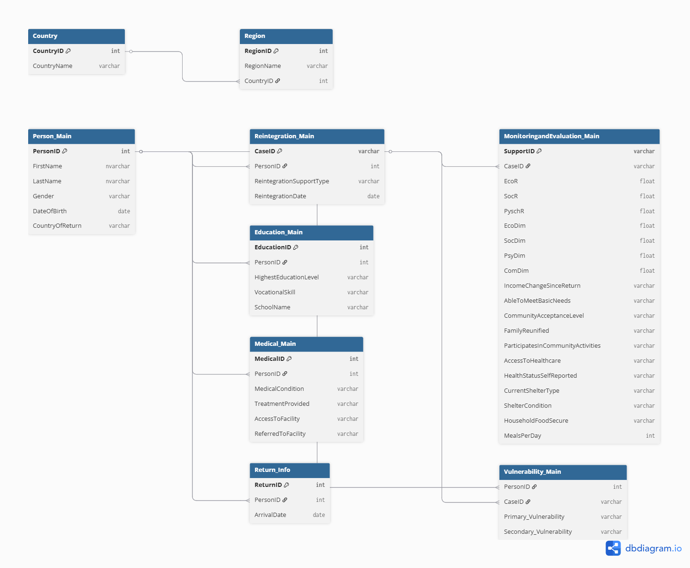

📊 GRProject – A Demo Humanitarian Analytics Project
This interactive dashboard analyzes voluntary return and reintegration outcomes for stranded Ghanaian citizens who participated in the Government of Ghana’s Assisted Voluntary Return and Reintegration (AVRR) initiative. Built using Power BI with entirely fictional data sourced from a simulated SQL Server database, this project is intended to mimic a real-world analysis environment. It provides insights into return support, reintegration assistance, monitoring and evaluation outcomes, and post-return community acceptance across economic, social, and psychosocial dimensions.
Note: This project is developed for portfolio demonstration purposes only. All data presented is fictitious and does not represent real individuals, organizations, or outcomes.
The dashboard contains six main sections that allow users to explore the project from different thematic perspectives:
- Demographics – Arrival years, countries of return, gender disaggregation, and age groups.
- Vulnerability Section – Primary and secondary vulnerabilities including victims of trafficking, unaccompanied minors, and returnees with medical conditions.
- Reintegration Section – Types of support received across economic, psychosocial, and social domains.
- MHPSS Section – Access to mental health and psychosocial support services and self-reported health status.
- Medical Support Section – Delivery of medical aid and referrals disaggregated by vulnerability and demographic indicators.
- Monitoring & Evaluation Section – Sustainability scores (EcoR, SocR, PsyR), thresholds achieved, and indicators like community acceptance and family reunification.
🔗 Live Power BI Dashboard
📦 SQL Projects & Query Documentation
This section contains real SQL scripts written for the GRProject Power BI dashboard. It showcases my ability to design efficient queries that power each visual on the dashboard.
Demographics
SELECT
p.PersonID,
p.CaseId,
p.FirstName,
p.LastName,
p.DateOfBirth,
p.ArrivalDate,
YEAR(p.ArrivalDate) AS ArrivalYear,
DATEDIFF(YEAR, p.DateOfBirth, GETDATE()) AS Age,
CASE
WHEN DATEDIFF(YEAR, p.DateOfBirth, GETDATE()) < 18 THEN 'Under 18'
WHEN DATEDIFF(YEAR, p.DateOfBirth, GETDATE()) BETWEEN 18 AND 35 THEN '18–35'
WHEN DATEDIFF(YEAR, p.DateOfBirth, GETDATE()) BETWEEN 36 AND 60 THEN '36–60'
ELSE '60+'
END AS AgeGroup,
c.CountryName,
r.Homeregion AS HomeRegion,
g.Gender,
e.LevelName AS EducationLevel
FROM
[dbo].[Personal information_main] p
JOIN [dbo].[Country] c ON p.CountryID = c.CountryID
JOIN [dbo].[Region] r ON p.HomeRegion = r.ID
JOIN [dbo].[gender] g ON p.GenderID = g.GenderID
JOIN [dbo].[EducationLevel] e ON p.EducationLevelID = e.EducationLevelID;
Vulnerability – Disaggregated Profile by Type, Age & Gender
SELECT
pim.PersonID,
pim.CaseId,
c.CountryName,
r.Homeregion AS HomeRegion,
g.Gender,
pv.VulnerabilityName AS PrimaryVulnerability,
sv.VulnerabilityName AS SecondaryVulnerability,
CASE
WHEN pv.VulnerabilityName IS NOT NULL AND sv.VulnerabilityName IS NOT NULL
THEN 'Yes'
ELSE 'No'
END AS TwoVul_Types,
CASE
WHEN DATEDIFF(YEAR, pim.DateOfBirth, GETDATE()) < 18 THEN 'Under 18'
WHEN DATEDIFF(YEAR, pim.DateOfBirth, GETDATE()) BETWEEN 18 AND 35 THEN '18–35'
WHEN DATEDIFF(YEAR, pim.DateOfBirth, GETDATE()) BETWEEN 36 AND 60 THEN '36–60'
ELSE '60+'
END AS AgeGroup,
YEAR(pim.ArrivalDate) AS ArrivalYear
FROM dbo.[Personal information_main] pim
LEFT JOIN dbo.Country c ON pim.CountryID = c.CountryID
LEFT JOIN dbo.Region r ON pim.HomeRegion = r.ID
LEFT JOIN dbo.gender g ON pim.GenderID = g.GenderID
LEFT JOIN dbo.Vulnerability pv ON pim.PrimaryVulnerabilityID = pv.VulnerabilityID
LEFT JOIN dbo.Vulnerability sv ON pim.SecondaryVulnerabilityID = sv.VulnerabilityID
WHERE pim.PrimaryVulnerabilityID IS NOT NULL OR pim.SecondaryVulnerabilityID IS NOT NULL;
Reintegration Section
SELECT
c.CountryName AS CountryOfReturn,
p.PersonID,
p.CaseId,
p.ArrivalDate,
p.FirstName,
p.LastName,
p.DateOfBirth,
LTRIM(RTRIM(REPLACE(r.Homeregion, 'Region', ''))) AS [Home Region],
g.Gender,
sc.CategoryName AS [Category of support],
NULL AS [Business Type],
st.SupportTypeName AS [Type of support],
-- Derived Support Dimension
CASE
WHEN st.SupportTypeName IN (
'Business Start-up',
'Cash Transfer Program',
'Housing support',
'Job Placement Support',
'Public Works Employment',
'Rent Support'
) THEN 'Economic'
WHEN st.SupportTypeName IN (
'Education support',
'Referral to Shelter'
) THEN 'Social'
WHEN st.SupportTypeName IN (
'Individual Counseling',
'Medical Referral',
'Mental Health Referrals',
'Peer Mentorship'
) THEN 'Psychosocial'
ELSE 'Unknown'
END AS [Support Dimension],
CASE t.Training
WHEN 1 THEN 'Yes'
ELSE 'No'
END AS Training,
rs.AdditionalSupport AS [Additional support (Enhanced)],
rs.ReintegrationGrantEconomic AS [Reintegration grant Allocated_Economic],
rs.AdditionalSupportEnhanced AS [Reintegration grant Allocated_Enhanced],
rs.SumUsedUp,
rs.SupportStatus,
-- Simulated reintegration start date (fixed offset)
DATEADD(DAY, 17, p.ArrivalDate) AS ReintegrationStartDate,
-- NFI-related data
n.DistributionDate AS [NFI Distribution Date],
nc.NFI_CategoryName AS [NFI Category],
ni.NFI_ItemName AS [NFI Item],
n.Quantity AS [NFI Quantity]
FROM
[dbo].[Personal information_main] p
JOIN
[dbo].[Region] r ON p.HomeRegion = r.ID
JOIN
[dbo].[gender] g ON p.GenderID = g.GenderID
JOIN
[dbo].[SupportCategory] sc ON p.CategoryOfSupportID = sc.CategoryID
JOIN
[dbo].[reintegrationsupport_main] rs ON p.PersonID = rs.PersonID
JOIN
[dbo].[SupportType] st ON rs.SupportTypeID = st.SupportTypeID
JOIN
[dbo].[Training] t ON rs.TrainingID = t.TrainingID
JOIN
[dbo].[Country] c ON p.CountryID = c.CountryID
LEFT JOIN
[dbo].[Nfi] n ON p.PersonID = n.PersonID
LEFT JOIN
[dbo].[NFI_Category] nc ON n.NFI_CategoryID = nc.NFI_CategoryID
LEFT JOIN
[dbo].[NFI_Item] ni ON n.NFI_ItemID = ni.NFI_ItemID;
MHPSS – Mental Health and Psychosocial Support Overview
SELECT
c.CountryName AS CountryOfReturn,
p.PersonID,
p.CaseId,
p.ArrivalDate,
p.FirstName + ' ' + p.LastName AS FullName,
p.DateOfBirth,
LTRIM(RTRIM(REPLACE(r.Homeregion, 'Region', ''))) AS [Home Region],
g.Gender,
mc.ConditionName AS [Medical Condition],
v1.VulnerabilityName AS [Primary Vulnerability],
st.SupportTypeName AS [Type of Support],
CASE t.Training
WHEN 1 THEN 'Yes'
ELSE 'No'
END AS Training,
ss.StatusName AS [Support Status],
n.Quantity AS [NFI Quantity],
-- MHPSS clean output
CASE m.MHPSSAssessed
WHEN 1 THEN 'Yes'
ELSE 'No'
END AS [MHPSS Assessed],
CASE m.MHPSSNeedIdentified
WHEN 1 THEN 'Yes'
ELSE 'No'
END AS [MHPSS Need Identified],
CASE m.MHPSSSessionReceived
WHEN 1 THEN 'Yes'
ELSE 'No'
END AS [MHPSS Session Received],
m.NumberofSessions,
CASE m.ReferralToSpecialist
WHEN 1 THEN 'Yes'
ELSE 'No'
END AS [Referral To Specialist],
m.ReasonForReferral,
ms.MHPSS_Status AS [Final MHPSS Status]
FROM
[dbo].[Personal information_main] p
JOIN
[dbo].[Country] c ON p.CountryID = c.CountryID
JOIN
[dbo].[Region] r ON p.HomeRegion = r.ID
JOIN
[dbo].[gender] g ON p.GenderID = g.GenderID
LEFT JOIN
[dbo].[MedicalCondition] mc ON p.MedicalConditionID = mc.MedicalConditionID
LEFT JOIN
[dbo].[Vulnerability] v1 ON p.PrimaryVulnerabilityID = v1.VulnerabilityID
JOIN
[dbo].[reintegrationsupport_main] rs ON p.PersonID = rs.PersonID
JOIN
[dbo].[SupportType] st ON rs.SupportTypeID = st.SupportTypeID
JOIN
[dbo].[Training] t ON rs.TrainingID = t.TrainingID
JOIN
[dbo].[SupportStatus] ss ON p.SupportStatusID = ss.StatusID
LEFT JOIN
[dbo].[Mhpss_main] m ON p.PersonID = m.PersonID
LEFT JOIN
[dbo].[MHPSS_Status] ms ON m.FinalMHPSSStatus = ms.MHPSS_StatusID
LEFT JOIN
[dbo].[Nfi] n ON p.PersonID = n.PersonID;
MHPSS – Mental Health and Psychosocial Support Overview
SELECT
c.CountryName AS CountryOfReturn,
p.PersonID,
p.CaseId,
p.ArrivalDate,
p.FirstName + ' ' + p.LastName AS FullName,
p.DateOfBirth,
LTRIM(RTRIM(REPLACE(r.Homeregion, 'Region', ''))) AS [Home Region],
g.Gender,
mc.ConditionName AS [Medical Condition],
v1.VulnerabilityName AS [Primary Vulnerability],
st.SupportTypeName AS [Type of Support],
CASE t.Training
WHEN 1 THEN 'Yes'
ELSE 'No'
END AS Training,
ss.StatusName AS [Support Status],
n.Quantity AS [NFI Quantity],
-- MHPSS clean output
CASE m.MHPSSAssessed
WHEN 1 THEN 'Yes'
ELSE 'No'
END AS [MHPSS Assessed],
CASE m.MHPSSNeedIdentified
WHEN 1 THEN 'Yes'
ELSE 'No'
END AS [MHPSS Need Identified],
CASE m.MHPSSSessionReceived
WHEN 1 THEN 'Yes'
ELSE 'No'
END AS [MHPSS Session Received],
m.NumberofSessions,
CASE m.ReferralToSpecialist
WHEN 1 THEN 'Yes'
ELSE 'No'
END AS [Referral To Specialist],
m.ReasonForReferral,
ms.MHPSS_Status AS [Final MHPSS Status]
FROM
[dbo].[Personal information_main] p
JOIN
[dbo].[Country] c ON p.CountryID = c.CountryID
JOIN
[dbo].[Region] r ON p.HomeRegion = r.ID
JOIN
[dbo].[gender] g ON p.GenderID = g.GenderID
LEFT JOIN
[dbo].[MedicalCondition] mc ON p.MedicalConditionID = mc.MedicalConditionID
LEFT JOIN
[dbo].[Vulnerability] v1 ON p.PrimaryVulnerabilityID = v1.VulnerabilityID
JOIN
[dbo].[reintegrationsupport_main] rs ON p.PersonID = rs.PersonID
JOIN
[dbo].[SupportType] st ON rs.SupportTypeID = st.SupportTypeID
JOIN
[dbo].[Training] t ON rs.TrainingID = t.TrainingID
JOIN
[dbo].[SupportStatus] ss ON p.SupportStatusID = ss.StatusID
LEFT JOIN
[dbo].[Mhpss_main] m ON p.PersonID = m.PersonID
LEFT JOIN
[dbo].[MHPSS_Status] ms ON m.FinalMHPSSStatus = ms.MHPSS_StatusID
LEFT JOIN
[dbo].[Nfi] n ON p.PersonID = n.PersonID;
Monitoring & Evaluation – Reintegration Sustainability & Community Indicators
SELECT
C.CountryName AS CountryOfReturn,
P.PersonID,
P.CaseId,
P.ArrivalDate,
YEAR(P.ArrivalDate) AS ArrivalYear,
P.FirstName + ' ' + P.LastName AS FullName,
CAST(DATEDIFF(DAY, P.DateOfBirth, P.ArrivalDate) / 365.25 AS INT) AS Age,
CASE
WHEN CAST(DATEDIFF(DAY, P.DateOfBirth, P.ArrivalDate) / 365.25 AS INT) >= 18 THEN 'Adult'
WHEN CAST(DATEDIFF(DAY, P.DateOfBirth, P.ArrivalDate) / 365.25 AS INT) > 2
AND CAST(DATEDIFF(DAY, P.DateOfBirth, P.ArrivalDate) / 365.25 AS INT) < 18 THEN 'Child'
ELSE 'Infant'
END AS AgeBin,
LTRIM(RTRIM(R.Homeregion)) AS [Home Region],
G.Gender,
E.LevelName AS [Highest Education Level],
ISNULL(PV.VulnerabilityName, '') AS [Primary Vulnerability],
ISNULL(SV.VulnerabilityName, '') AS [Secondary Vulnerability],
M.RehabilitationSustainability,
M.EcoR,
M.SocR,
M.PyschR,
M.EcoDim,
M.SocDim,
M.PsyDim,
M.ComDim,
ISNULL(I.IncomeStatus, '') AS IncomeChangeSinceReturn,
ISNULL(LH.AbleToMeetBasicNeeds, '') AS AbleToMeetBasicNeeds,
ISNULL(SOC.CommunityAcceptanceLevel, '') AS CommunityAcceptanceLevel,
CASE WHEN SOC.FamilyReunified = 1 THEN 'Yes' ELSE 'No' END AS FamilyReunified,
CASE WHEN SOC.ParticipatesInCommunityActivities = 1 THEN 'Yes' ELSE 'No' END AS ParticipatesInCommunityActivities,
CASE WHEN H.AccessToHealthcareID IS NOT NULL THEN 'Yes' ELSE 'No' END AS AccessToHealthcare,
HS.HealthStatus AS HealthStatusSelfReported,
SH.CurrentShelterType,
SH.ShelterCondition,
CASE WHEN HF.HouseholdFoodSecureID = 1 THEN 'Yes' ELSE 'No' END AS HouseholdFoodSecure,
HF.MealsPerDay
FROM
[dbo].[MonitoringandEvalution_Main] M
JOIN
[dbo].[Personal information_main] P ON M.PersonID = P.PersonID
JOIN
[dbo].[Country] C ON P.CountryID = C.CountryID
JOIN
[dbo].[Region] R ON P.HomeRegion = R.ID
JOIN
[dbo].[gender] G ON P.GenderID = G.GenderID
JOIN
[dbo].[EducationLevel] E ON P.EducationLevelID = E.EducationLevelID
LEFT JOIN
[dbo].[Vulnerability] PV ON P.PrimaryVulnerabilityID = PV.VulnerabilityID
LEFT JOIN
[dbo].[Vulnerability] SV ON P.SecondaryVulnerabilityID = SV.VulnerabilityID
LEFT JOIN
[dbo].[SupportCategory] SC ON P.CategoryOfSupportID = SC.CategoryID
LEFT JOIN
[dbo].[IncomeChange] I ON P.IncomeChangeID = I.ID
LEFT JOIN
[dbo].[livelihood_main] LH ON P.PersonID = LH.PersonID
LEFT JOIN
[dbo].[social_main] SOC ON P.PersonID = SOC.PersonID
LEFT JOIN
[dbo].[health_main] H ON P.PersonID = H.PersonID
LEFT JOIN
[dbo].[HealthStatus] HS ON H.HealthStatusSelfReportedID = HS.HealthStatusID
LEFT JOIN
[dbo].[shelter_main] SH ON P.PersonID = SH.PersonID
LEFT JOIN
[dbo].[householdfood] HF ON P.PersonID = HF.PersonID
LEFT JOIN
[dbo].[reintegrationsupport_main] RS ON P.PersonID = RS.PersonID
ORDER BY
P.PersonID;
🗂️ GRProject SQL Schema Overview
Below is the Entity Relationship Diagram (ERD) representing the schema of the GRProject database. This structure was designed to simulate a realistic reintegration tracking system and supports all Power BI visuals on this portfolio.
